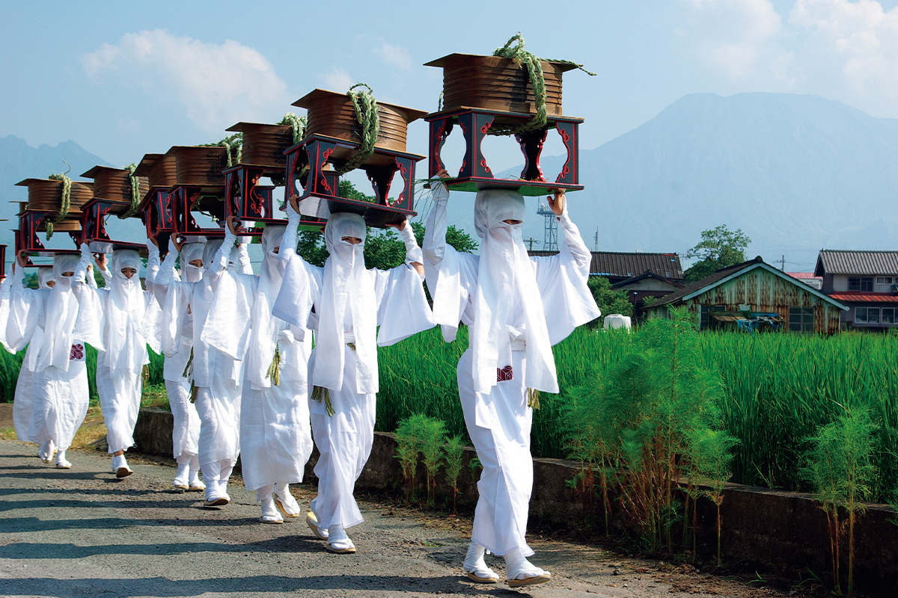
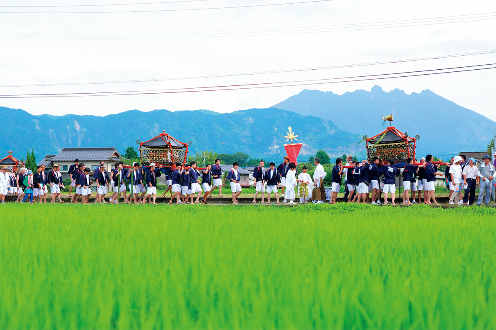
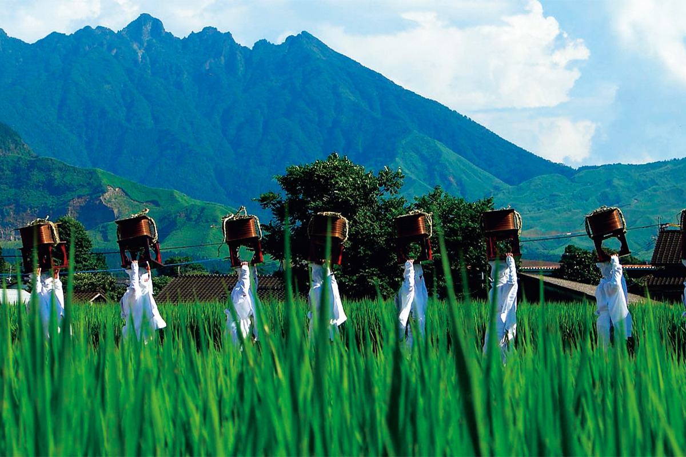
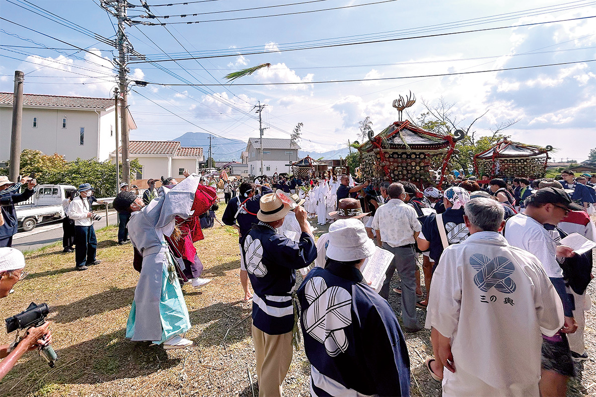

Префектура Кумамото · Асо · праздник
Онда-мацури в Асо: боги в паланкинах приходят посмотреть на рис

Каждое лето святилище Асо-дзиндзя выносит своих богов к рисовым полям, чтобы те сами увидели, как растёт урожай. Онда-мацури считают одним из тех праздников Японии, которые стоит увидеть хотя бы раз в жизни.
Праздник
Боги осматривают поля
Онда-мацури это главный праздник года в святилище Асо-дзиндзя, которое стоит в городе Асо, у подножия одноимённого вулкана в префектуре Кумамото. Праздники и обряды, связанные с рисом, проходят по всей Японии, но здесь сами боги отправляются в путь: их везут в паланкинах, и процессия обходит залитые водой поля, чтобы божества посмотрели, как поднимаются молодые ростки.

В процессии четыре паланкина, а за ними идут унари, женщины в белых одеждах, девушки-рисосажательницы саотомэ, ряженые «львы» и куклы, изображающие посадку риса. Дважды шествие останавливается у временных стоянок богов. Там проходит обряд посадки: пучки рисовой рассады бросают вверх, на крыши паланкинов. Чем больше ростков удержится наверху, тем богаче будет урожай. Весь праздник, по сути, одна большая просьба о хорошем рисе.
Главное
Шествие унари
Самая узнаваемая сцена Онда-мацури: женщины в белом медленно идут вдоль ярко-зелёного рисового поля. Унари всегда четырнадцать. Каждая несёт еду для одного из четырнадцати богов: двенадцати богов Асо, бога огня и бога воды. Зрелище по-настоящему таинственное.

Песни
Голоса носильщиков
Второе, что стоит услышать на празднике, это старинные полевые песни таута. Их поют носильщики паланкинов, и в этом простом напеве много силы: он похож на рабочие песни, под которые когда-то тянули брёвна. Слушая их, начинаешь иначе думать о том, на что способна песня.
Каждый февраль эти песни звучат впервые в году: на обряде Тока-но сэтиэ в святилище начинают петь полевые песни нового сезона.

Главные ворота святилища, рухнувшие при землетрясении в Кумамото в 2016 году, восстановили к декабрю 2023 года, и летом 2024 года праздник впервые за девять лет провели в полном прежнем виде.
Онда-мацури, святилище Асо-дзиндзя
- Адрес
- префектура Кумамото, Асо, Итиномия-мати, Мияди, 3083-1
- Телефон
- +81 967-22-0064
- Даты
- ежегодно 28 июля
- Как добраться
- от станции JR Мияди около 15 минут пешком; на автобусе Kyushu Sanko до остановки «Асо-дзиндзя-маэ»; на машине около часа от развязки Кумамото на скоростной дороге Кюсю
- Сайт
- asojinja.or.jp